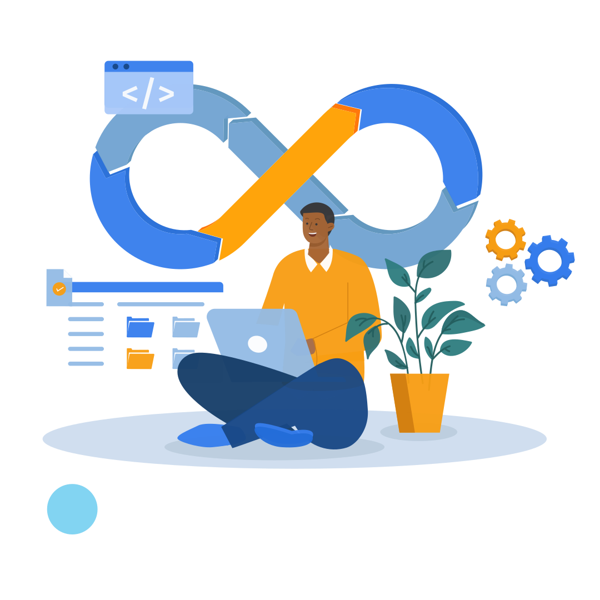
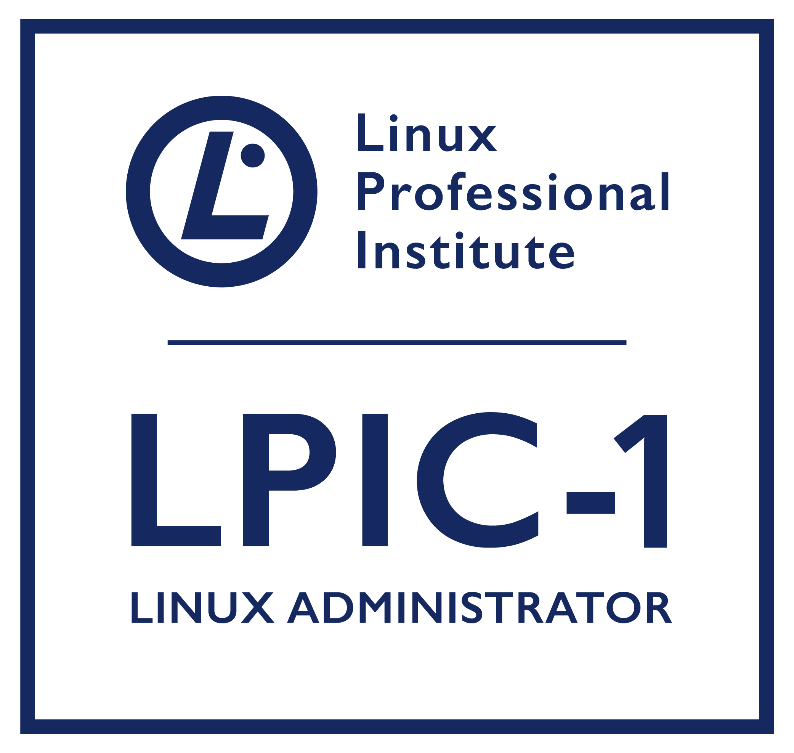
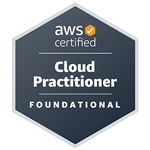

Hey folks, I'm
Sergei Guidia
DevOps Engineer
and good guy :)
I believe that development is an endless journey of self-improvement. My passion for technology and my aspiration to achieve the highest level of expertise in DevOps inspire and drive me every day. My goal is to deepen my knowledge and skills in this field as deeply as possible. I envision a future in DevOps as a transformative tool capable of reshaping business processes and enhancing software development, and I am committed to becoming an expert in this pivotal domain. In the world of DevOps, the possibilities are limitless, and I am ready to explore them to the fullest and contribute to the advancement of this innovative field.
After reviewing my resume, you are likely to have one main question: How is it possible that for the last 8+ years, I, Sergey, haven't been involved in IT, yet I call myself a DevOps engineer? It's a valid question, and to delve deeper into it, let's take a trip back into the distant past. Back when I was in school, I developed a passion for website development. I became deeply engrossed in learning technologies like CSS and HTML. At the time, there were these things called CGI inserts, if I remember correctly. Later on, I delved into PHP and Perl, MySQL databases became popular, and forum engines were emerging. Mods were being developed for them, and I made my initial attempts at writing my own website and forum code. Concurrently, there were these popular email newsletters that were sent using specialized platforms. I even published a kind of magazine. The theme of my website was Windows OS, and I published articles, tips, and notably, a FAQ section. The FAQ was the core of my newsletter—some subscribers asked questions, while others answered them. I compiled everything into a coherent whole and released it. I had around 70k newsletter subscribers, and my website received about 2-3 thousand visitors daily. This was all happening in the year 2000 when the internet wasn't as developed as it is today. It's unfortunate that I have nothing left from those times.
All of this laid a strong foundation for IT in my life. Then came university and work in IT, but I won't dwell on that; you can see it in my resume. In 2016, I decided to try my hand at business, and it might seem like I stopped doing what I love, but that's not entirely true. Our business was related to food production, and I ran it together with a partner, my friend, and a fellow university alumnus. I was responsible for all IT technologies, leveraging the knowledge I had gained earlier. I automated any business process within the company. The primary tool was 1C, a Russian platform for developing business solutions, akin to SAP. I customized configurations to suit our needs. I wrote Python scripts to automate tasks for chefs, pulling data directly from the database for recipes, procurement orders, production orders, automated checks, and label generation, among other things. I have a general fondness for automation; I believe it's better to invest a bit of time now and save much more in the future. I also dedicated a significant amount of time to automating paperwork within our company. I eliminated all physical documents and digitized everything. Leave requests, shift reports, product rejections, inventory checks, and more. I integrated everything into a unified information system. Work was done solely through phones or computers, with requests becoming tasks assigned directly to responsible parties or, more precisely, the relevant teams. By consolidating everything in one place and maintaining a clear structure, we generated data that could be analyzed in the future and used for business development and identifying weak points. In 2018, we launched a new project—opening a restaurant, and once again, we incorporated extensive automation to ensure maximum autonomy.
Then, a war happened. I hadn't been a supporter of the Russian government since 2014, but the events of 2022 confirmed my stance. I actively participated in my country's political life. I volunteered during elections, attended protests, recorded videos of these events, and uploaded them to YouTube. I even featured in local news. Ultimately, it became unsafe for me to stay in the country, and I made the decision to leave Russia. So, at the age of 35, along with my family (my wife and two children), we found ourselves in the United States in the summer of 2022. I had to escape through dangerous Mexico, risking my family's lives, and start over from scratch. I consider this another achievement. It's been a year now, and I work as a leak repair technician in critical infrastructure. This is my first job, and I'll continue working here until I return to my true passion—information technology.
Yes, I've fallen far behind in IT, and I've missed out on so much. But I don't see this as a problem; it's simply my journey, and I'll navigate it successfully. During the year I've spent in the USA, I've dedicated all my free time to two crucial pursuits:
- Improving my English language proficiency.
- Exploring the world of DevOps, absorbing any technologies associated with it. I contemplated whether to attend a boot camp or self-study, and I chose the path of obtaining certifications. It's currently the only way I can validate my qualifications and prove my professional readiness. I don't aspire to a senior role; I'm more than willing to start from the ground up, in a junior position. Everyone has to start somewhere.
Initially, I had planned to pursue a career in development. However, a friend introduced me to the world of DevOps, and I was astounded by how accurately it described my previous experience. It aligns closely with my passions: IT and automation. It's automation in IT, infrastructure as code, continuous code delivery, and so much more. All of this fills me with enthusiasm.
I've decided that on this website, I'll document my relevant experience in this field. It will serve as my calling card and portfolio, where I'll structure and describe my achievements and the expertise I've acquired. I'm fully open to participating in open-source projects as a DevOps engineer, so if anyone is interested, please reach out to me via email.
In essence, I can familiarize myself with any technology; just give me a bit of time and internet access.
Projects
Website Prortfolio !!!
Initially, I wanted to purchase basic hosting to upload my resume and simply have a quick way to present myself. However, upon further consideration, I realized that this could turn into a real project. I plan to use modern technologies and practices extensively for my website. While many of the features might seem excessive, I'm doing this with the goal of gaining practical knowledge. So, let's get started:
- Created an S3 bucket, made it public, configured Bucket policy, and manually uploaded my website.
- Purchased the domain guidia.tech from an external service (not AWS).
- Added a new hosted zone in AWS Route 53, obtained the NS servers, and set them up with my DNS provider.
- Added an SSL certificate to my domain. To do this, I obtained it from AWS Certificate Manager. Unfortunately, or fortunately, you can't directly link the certificate, so I had to set it up through CloudFront. I created a new distribution, selected the appropriate S3 bucket, specified the CNAME names for the main domain, enabled HTTP to HTTPS redirect, and selected the certificate.
- Decided to add some CI/CD to my project. I used Git - AWS CodePipeline - AWS S3 Bucket combination. Now, when I upload new code to Git, it automatically deploys to the S3 bucket.
- CDNs are great, but when your only index.html doesn't update for several days, and you want to make changes right now because, according to Murphy's law, your potential employer is reviewing your modest portfolio right now and can't see the cool changes you've made to this project, you decide to tweak things. I automated the cooperation between the S3 bucket and CloudFront, so every time new code is deployed from GitHub, it triggers automatic invalidation of all changed files. To do this, I used AWS Lambda services.
This is a hands-on learning experience, and I'm excited to see how it evolves. Stay tuned for more updates!
Certificates

LPIC-1
LPIC-1 is the certification in the multi-level Linux professional certification program of the Linux Professional Institute (LPI).

AWS Cloud Quest: Cloud Practitioner
Earners of this badge have demonstrated basic solution building knowledge using AWS services and have a fundamental understanding of AWS Cloud concepts. Badge earners have acquired hands-on experience with compute, networking, database and security services.

AWS Certified Cloud Practitioner
The AWS Certified Cloud Practitioner validates foundational, high-level understanding of AWS Cloud, services, and terminology. This is a good starting point on the AWS Certification journey for individuals with no prior IT or cloud experience switching to a cloud career or for line-of-business employees looking for foundational cloud literacy.